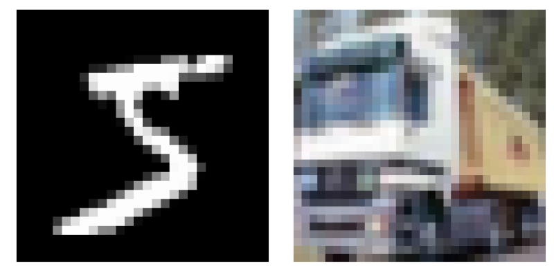
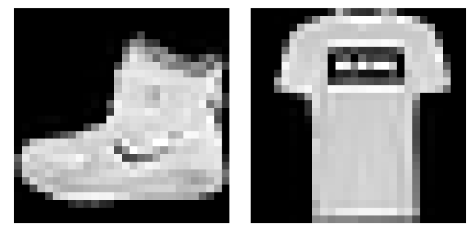
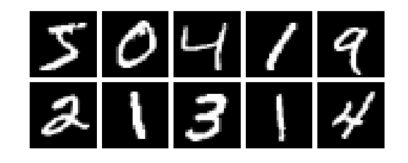

Package development
The very nice thing about Julia is that it is simple to create a package and share it with other users. This section contains a step-by-step tutorial on how to build a new package from scratch. Moreover, the package that is described in this section will be used later in the course.
Pkg templates
The very first step is to generate a new empty package. A built-in function generate in the Pkg REPL allows easily generating a new package. The generate function can be used as follows from the Pkg REPL.
(@v1.5) pkg> generate PackageName
Generating project PackageName:
PackageName/Project.toml
PackageName/src/PackageName.jlNote that a new package with the name PackageName is generated in the current folder in the case above. However, it is also possible to use an absolute/relative path to generate a new package in a specific folder. The generate function creates a new folder (with the name that matches the package name) with the following content.
├── Project.toml
└── src
└── PackageName.jlWe can see that the new package consists of the Project.toml file and the src folder with one .jl file. The src/PackageName.jl file contains a module PackageName as shown in the following code. Note that the package, the .jl file, and the module in the .jl file share the same name.
module PackageName
greet() = print("Hello World!")
end # moduleSince the generate function creates an empty package, the Project.toml file is also almost empty. It only contains the name of the package, its unique UUID, its version, and the list of authors.
name = "PackageName"
uuid = "fa38fd22-11d6-48c8-ae38-ef06258216d8"
authors = ["Author Name"]
version = "0.1.0"Note that the package in Julia has to contain only two things: Project.toml file and .jl (in src subfolder) file with a module that contains a source code. So in fact, packages are modules with their own environment.
The built-in generate function provides only basic functionality for generating packages. In many cases, it is sufficient. However, the PkgTemplates package offers a straightforward, repeatable, and customizable way to generate the files for a new package.
The goal of this exercise is to create a new package using the PkgTemplates package. Install PkgTemplates and then use the following code to generate a new package template.
using PkgTemplates
template = Template(;
user = "GithubUserName", # github user name
authors = ["Author1", "Author2"], # list of authors
dir = "/Path/To/Dir/", # dir in which the package will be created
julia = v"1.5", # compat version of Julia
plugins = [
!CompatHelper, # disable CompatHelper
!TagBot, # disable TagBot
Readme(; inline_badges = true), # added readme file with badges
Tests(; project = true), # added Project.toml file for unit tests
Git(; manifest = true), # remove manifest.toml from .gitignore
License(; name = "MIT") # addedMIT licence
],
)Do not forget to change the following keywords: user, authors and dir.
In the rest of the lecture, we will try to write a code that will help us to visualize gray and color images. The package will provide the following functionality:
- Converting array representation of the image to gray or RGB representation.
- Converting array representation of multiple images to an array of gray or RGB images.
- Plotting multiple images at once in a grid.
Try to come up with a suitable package name that will describe the functionality described above (for some tips on package naming, see the official package naming guidelines. Change the package name in the following code and then use it to generate a new package.
template("PackageName")Solution:
There is no best way to choose the correct package name. In this example, we can, for example, use the ImageInspector name. With the appropriately changed and created template, the package can be generated using the following code.
template("ImageInspector")If we look into the generated folder, we see that it contains more files than the folder generated by the built-in generate function.
├── .git
├── .gitignore
├── LICENSE
├── Manifest.toml
├── Project.toml
├── README.md
├── src
│ └── ImageInspector.jl
└── test
├── Manifest.toml
├── Project.toml
└── runtests.jlThe PkgTemplate provides an interactive way how to generate a new package. The template can be created interactively using the following command.
Template(; interactive=true)Note that we use a really simple template in the above exercise. However, PkgTemplates provides many additional features to simplify the package generation process. There are plugins that add documentation or integration with some GitHub features. See the official PkgTemplates documentation for more information.
Development mode
In the previous section, we created a new empty package. The goal of this section is to show how to create the content of the package. Now we are in a situation, that we created only a folder with some Julia-related content. The first thing we have to do is tell Julia that the folder is a package and we want to start its development. This can be done using the dev (or develop) command in the Pkg REPL followed by the (absolute or relative) path to our new package's main folder.
(@v1.5) pkg> dev /absolute/or/relative/path/ImageInspector/Similar to the add command, the dev command allows us to load the package using the using or import keyword.
using ImageInspectorThe difference between add and dev commands is that the dev command tracks the package folder's current state and not the concrete git commit in some branch. It means that we do not have to update the package to get the latest functionality. But there is a problem: a package can only be loaded once per Julia session. Once we run the using or import command for some package in development mode, and then we make some changes in the code, these changes will not be applied (even if we run using or import again). For example, we can add the greet function to the ImageInspector package, which is already loaded in the current Julia session.
module ImageInspector
export greet
greet() = print("Hello World!")
endIf we now call the greet function, we will get the UndefVarError error, as can be seen below.
julia> greet()
ERROR: UndefVarError: greet not definedIn this case, we have to restart Julia and start with a new Julia session to get the latest functionality.
julia> using ImageInspector
julia> greet()
Hello World!This isn't very pleasant, and it slows down the process of package development. Luckily, there is a very handy package Revise that can make this process significantly more pleasant. The Revise package provides a lot of convenient functionality. However, we will present only the basic usage. More advanced use cases can be found in the documentation of the Revise package.
The basic use case is as follows. If we want to develop a package and we have a fresh Julia session, we first load the Revise package, and then we load any other packages that we want to use or develop.
julia> using Revise # importantly, this must come before `using ImageInspector`
julia> using ImageInspector
julia> greet()
Hello World!If we decided that we want to add new functionality to the Image Inspector package, we could do it. The Revise package ensures that the new functionality will be available immediately. For example, we can add the greet2 function as follows.
module ImageInspector
export greet, greet2
greet() = print("Hello World!")
greet2() = print("Hello World!!!!")
endSince we are using the Revise package, it should be possible to call the greet2 function without restarting Julia session.
julia> greet2()
Hello World!!!!This exercise aims to define an image function that converts a given matrix of real numbers to a matrix of Gray points. The real number can be converted to a Gray point using the Gray constructor from the Colors package. Use the following code to test the function.
using ImageInspector, MLDatasets, Plots
x = MNIST.traintensor(1);
plot(image(x); axis = nothing, border = :none)Hint: Each Julia package contains its environment for tracking package dependencies. Use proper commands in the Pkg REPL to add the Colors package as a dependency of the ImageInspector package.
Solution:
Since we want to add the image function to the ImageInspector package, we have to install the Colors package. The first step is to activate the environment in the ImageInspector package. Then we can use the add Colors to install the Colors package.
(@v1.5) pkg> activate /path/ImageInspector
Activating environment at `/path/ImageInspector/Project.toml`
(ImageInspector) pkg> add ColorsWith the Colors package installed, we have to add using Colors into the ImageInspector module. Then we can define the image as follows.
module ImageInspector
using Colors
export image
image(x::AbstractMatrix{<:Real}) = Gray.(x)
endNote that we also add export image. It is not necessary and only functions that will be used outside of the module should be exported.
The testing code in the previous exercise uses the MLDatasets package. This package provides many well-known datasets used in machine learning. One of them is the MNIST dataset of hand-written digits. When we run the testing code from the previous exercise, we get the following result.
Even though the dataset should contain only images of hand-written digits, the resulting image does not seem to be a digit. The reason is that images in the MNIST dataset are stored in the width x height format, and the Plots package assumes height x width format. We can simply solve this issue by redefining the image function as follows.
function image(x::AbstractMatrix{T}; flip = true) where {T <: Real}
xx = flip ? PermutedDimsArray(x, (2, 1)) : x
return Gray.(xx)
endNote that we use the PermutedDimsArray that creates a view such that the dimensions appear to be permuted. There is also the permutedims function that does the same but creates a copy. Now we can check if the function works as we wanted.
plot(
plot(image(x; flip = true); title = "flip = true"),
plot(image(x; flip = false); title = "flip = false");
axis = nothing,
border = :none,
)
Follow the same logic as in the previous exercise and define a new method for the image function that converts a given 3D array of real numbers to a matrix of RGB points. Assume that the third dimension represents color channels. Three real numbers can be converted to an RGB point using the RGB constructor from the Colors package. Make sure that the input array is of the proper size. If the size of the third dimension is:
1the function should return a gray image,3the function should return a color image,- otherwise, the function should throw an error.
Use the following code to test the image function.
using ImageInspector, MLDatasets, Plots
x1 = MNIST.traintensor(1);
x2 = CIFAR10.traintensor(2);
plot(
plot(image(x1)),
plot(image(x2));
axis = nothing,
border = :none
)Hint: use the eachslice function to split the given array along the third dimension and the dropdims function to drop dimension if necessary.
Solution:
In this case, we have three options, as said in the description of exercises. If the size of the third dimension is:
1we use thedropdimsfunction to drop the third dimension and recursively call theimagefunction.2we firstly use thePermutedDimsArrayifflipis true and then theeachslicefunction to split the input array along the third dimension to get the matrices representing red/green/blue channels. Then we can use broadcasting to create the array of RGB points from these three matrices.3we throw andArgumentError.
Altogether, the new method can be defined as follows.
function image(x::AbstractArray{T,3}; flip = true) where {T <: Real}
s = size(x, 3)
if s == 1
return image(dropdims(x; dims = 3); flip)
elseif s == 3
xx = flip ? PermutedDimsArray(x, (2, 1, 3)) : x
return RGB.(eachslice(xx; dims= 3)...)
else
throw(ArgumentError("unsupported size of the third dimension $(s) ∉ [1,3]."))
end
endNote that we use the eachslice function that returns a generator, where each element represents one color channel. We also use the three-dot syntax to unpack the generator as separate input arguments to the RGB constructor.

Images are usually stored in multidimensional arrays for computational purposes. For example, gray images are often stored as 3D or 4D arrays, where the last dimension represents individual images. Similarly, color images are usually stored as a 4D array. Add new methods for the image function with the following properties:
- New methods should accept two arguments:
x: 3D or 4D array of real numbers that represents images,inds: one or more indices of images that we want to extract and convert to Gray/RGB representation.
- If only one index is provided, the method should return a single image, i.e., array of Gray or RGB points.
- If more indices are provided, the method should return an array of images.
Use the following code to test the image function.
using ImageInspector, MLDatasets, Plots
x = MNIST.traintensor(1:10);
plot(plot.(image(x, [1,2]))...; axis = nothing, border = :none)Hint: use the selectdim function to select an individual image from an array of all images.
Solution:
We have four possible combinations of the input arguments:
- 3D array and one index,
- 3D array and multiple indices,
- 4D array and one index,
- 4D array and multiple indices.
It means that we should define a method for each combination of the input arguments. It can be done in the following way.
image(x::AbstractArray{T,3}, inds) where {T} = [image(selectdim(x, 3, i)) for i in inds]
image(x::AbstractArray{T,4}, inds) where {T} = [image(selectdim(x, 4, i)) for i in inds]
image(x::AbstractArray{T,3}, ind::Int) where {T} = image(x, [ind])[1]
image(x::AbstractArray{T,4}, ind::Int) where {T} = image(x, [ind])[1]However, these function definitions are redundant. In fact, we can reduce the number of methods to only two. It can be done as follows.
const ImArray{T<:Real} = Union{AbstractArray{T,3}, AbstractArray{T,4}}
image(x::ImArray, inds) = [image(selectdim(x, ndims(x), i)) for i in inds]
image(x::ImArray, ind::Int) = image(x, [ind])[1]Note that we use the const and the Union type to create a constant that represents a union type for the abstract 3D and 4D arrays of real numbers. Such a constant can be used in a normal type for multiple-dispatch.

Unit testing
In the previous section, we added a new function with four methods to our package, and we also tested manually if these functions work properly. However, it is not an optimal way how to test the code, especially for large projects. The standard way for testing code is to use so-called unit testing.
The Test package from Julia's standard library provides utility functions to simplify the process of writing unit tests. The package's core is the @test macro that tests if the given expression evaluates as true.
julia> using Test
julia> @test 1 = 1
ERROR: syntax: invalid assignment location "1"
julia> @test 1 = 3
ERROR: syntax: invalid assignment location "1"It is also possible to pass additional arguments to the @test macro. In such a case, the following syntax is used.
julia> @test π ≈ 3.14 atol=0.01
Test PassedIf we go back to our package, we can start writing tests for the methods of the image function. First, we have to import all necessary packages: Test, ImageInspector and Colors.
using ImageInspector, Test
using ImageInspector.ColorsNote that we import Colors from the ImageInspector to use the same version. Now we can define the input and corresponding expected output for the image function.
x = [0.1 0.2; 0.3 0.4];
img = Gray.(x);
img_flipped = Gray.(x');Since the input to the image function is a matrix, we intend to test the first method of the image function that creates gray images. The tests themselves can be performed as follows.
julia> @test image(x) == img_flipped
Test Passed
julia> @test image(x; flip = false) == img
Test Passed
julia> @test image(x; flip = true) == img_flipped
Test PassedSince all tests passed correctly, after each test the message Test Passed is printed. It is fine to write tests in this way if there is only a small number of tests. However, in practice, it is better to group tests in some logical way. The Test package provides the @testset macro designed for such cases. The basic usage of the @testset macro is the following.
julia> @testset "image function" begin
@test image(x) == img_flipped
@test image(x; flip = false) == img
@test image(x; flip = true) == img_flipped
end
Test Summary: | Pass Total
image function | 3 3Note that we use the begin ... end block to specify which tests should be grouped together. Moreover, it is possible to use the @testset macro in combination with the for loop to perform more tests in a simple way. For example, we may want to test the image function for different input images.
x1 = [0.1 0.2];
x2 = [0.1 0.2; 0.3 0.4];
x3 = [0.1 0.2 0.3; 0.4 0.5 0.6];
x4 = [0.1 0.2; 0.3 0.4; 0.5 0.6];
x5 = [0.1, 0.2];In such a case, the tests can be performed in the following way. We use nested test sets to group all tests together since each iteration of the for loop after the @testset is treated as a separate group of tests.
julia> @testset "image function" begin
@testset "size(x) = $(size(x))" for x in [x1, x2, x3, x4, x5]
img = Gray.(x);
img_flipped = Gray.(x');
@test image(x) == img_flipped
@test image(x; flip = false) == img
@test image(x; flip = true) == img_flipped
end
end
size(x) = (2,): Error During Test
[...]
Test Summary: | Pass Error Total
image function | 12 3 15
size(x) = (1, 2) | 3 3
size(x) = (2, 2) | 3 3
size(x) = (2, 3) | 3 3
size(x) = (3, 2) | 3 3
size(x) = (2,) | 3 3
ERROR: Some tests did not pass: 12 passed, 0 failed, 3 errored, 0 broken.Note that not all tests passed. The reason is that the variable x5 is a vector and not a matrix. From the list of all methods defined for the image function, we can see that there is no method for the vector.
julia> methods(image)
# 4 methods for generic function "image":
[1] image(x::AbstractArray{T,2}; flip) where T<:Real in ImageInspector at [...]
[2] image(x::AbstractArray{T,3}; flip) where T<:Real in ImageInspector at [...]
[3] image(x::Union{AbstractArray{T,3}, AbstractArray{T,4}} where T<:Real, ind::Int64) in ImageInspector at [...]
[4] image(x::Union{AbstractArray{T,3}, AbstractArray{T,4}} where T<:Real, inds) in ImageInspector at [...]It means that if we pass a vector as an argument, the MethodError will appear. The Test package provides the @test_throw macro that can be used to test if the expression throws the correct exception.
julia> @test_throws MethodError image(x5)
Test Passed
Thrown: MethodErrorThe Test package provides other handy macros besides the ones above. For more details, see the documentation.
We have to do the last thing to allow automated testing: copy the tests into the /test/runtests.jl file in the ImageInspector project folder. The content of the /test/runtests.jl should be similar to the following one.
using ImageInspector
using ImageInspector.Colors
using Test
@testset "ImageInspector.jl" begin
x1 = [0.1 0.2]
x2 = [0.1 0.2; 0.3 0.4]
x3 = [0.1 0.2 0.3; 0.4 0.5 0.6]
x4 = [0.1 0.2; 0.3 0.4; 0.5 0.6]
x5 = [0.1, 0.2]
@testset "size(x) = $(size(x))" for x in [x1, x2, x3, x4]
img = Gray.(x);
img_flipped = Gray.(x');
@test image(x) == img_flipped
@test image(x; flip = false) == img
@test image(x; flip = true) == img_flipped
end
@test_throws MethodError image(x5)
endNote that there is Project.toml and Manifest.toml files in the' test' folder, i.e., there is a separate environment only for tests. It allows us to use some packages only for tests. Now we can run tests directly from the Pkg REPL using the test command.
(@v1.5) pkg> test ImageInspector
Testing ImageInspector
Status `.../Project.toml`
[...]
Status `.../Manifest.toml`
[...]
Test Summary: | Pass Total
ImageInspector.jl | 13 13
Testing ImageInspector tests passedNote that it is possible to test the activated package using the test command without the package name. In our case, if we activate the environment corresponding to the ImageInspector, we can run tests as follows.
(@v1.5) pkg> activate ImageInspector
(ImageInspector) pkg> test
Testing ImageInspector
Status `.../Project.toml`
[...]
Status `.../Manifest.toml`
[...]
Test Summary: | Pass Total
ImageInspector.jl | 13 13
Testing ImageInspector tests passedFollow the same logic as we in the examples above and write tests for the rest of the image function methods. Since there are many ways to write tests, we will leave this exercise without a solution.
Image grid
Now we have the basic functionality of the ImageInspector package defined. However, we want to plot multiple images at once in a simple way to inspect loaded data. To do so, we will define two functions that will allow us to group multiple images into a grid. The first function defined blow computes grid size for the given number of images.
function gridsize(n::Int; nrows::Int = -1, ncols::Int = - 1)
if nrows < 1
if ncols < 1
nrows = round(Int, sqrt(n))
ncols = ceil(Int, n / nrows)
else
nrows = ceil(Int, n / ncols)
end
else
ncols = ceil(Int, n / nrows)
end
return nrows, ncols
endNote that we can control the number of rows or columns using keyword arguments nrows and ncols. The second function consists of two methods and converts a given array of real numbers to one big image of the appropriate color type.
imagegrid(x, ind::Int; kwargs...) = image(x, ind)
function imagegrid(x, inds; sep = 1, kwargs...)
imgs = image(x, inds)
n = length(imgs)
nrows, ncols = gridsize(n; kwargs...)
h, w = size(imgs[1])
A = fill(
eltype(imgs[1])(1), # white color in proper color type
nrows*h + (nrows + 1)*sep, # height of the reculting image
ncols*w + (ncols + 1)*sep, # width of the reculting image
)
for i in 1:nrows, j in 1:ncols
k = j + (i - 1) * ncols
k > n && break
rows = (1:h) .+ (i - 1)*h .+ i*sep
cols = (1:w) .+ (j - 1)*w .+ j*sep
A[rows, cols] = imgs[k]
end
return A
endNote that we use the sep keyword argument to specify the separator's width between images. With all functions defined, we can test them on real images.
using ImageInspector, MLDatasets, Plots
x = MNIST.traintensor(1:10);
plot(imagegrid(x, 1:10; n_rows = 2, sep = 2); axis = nothing, border = :none)
We can notice that we use the same settings for the plot function in all previous examples. So it makes sense to write an auxiliary function that sets desired attributes for the plot function. However, such a function will depend on the Plots package. It means that if we add the Plots package to the ImageInspector package, it will significantly slow down the load time. It can be annoying if we want to use some functionality that does not depends on the Plots package, and still, we have to load that package. Luckily, the Required package automatically allows the code's loading when another package is loaded, so explicit dependencies (and long load times) can be avoided. In our case, we can add Requires to the ImageInspector and write a new file /src/imageplot.jl with the following content.
using .Plots
export imageplot
function imageplot(x, ind; nrows = -1, ncols = -1, sep = 1, kwargs...)
return plot(imagegrid(x, ind; nrows, ncols, sep);
legend = false,
axis = nothing,
border = :none,
kwargs...
)
endNote that we only defined a wrapper function for the plot function and exported this function. Also note, that we have to use a relative path to the Plots package. The last thing we have to do is to specify on what package the code depends. To do that we have to define the __init__() function in the /src/ImageInspector.jl file.
function __init__()
@require Plots="91a5bcdd-55d7-5caf-9e0b-520d859cae80" include("imageplot.jl")
endThe __init__ function has to contain the @require macro followed by the package name and its unique UUID (can be found in the JuliaRegistries for public packages) and the code that should be included.
Now we can start a new Julia session and test if the loading works properly. If we do not load Plots, the imageplot function will not be available, as can be seen below.
julia> using ImageInspector, MLDatasets
julia> x = CIFAR10.traintensor(1:10);
julia> imageplot(x, 1:10; nrows = 2, sep = 2)
ERROR: UndefVarError: imageplot not definedNow we can load the Plots package, and the imageplot function will start working.
julia> using Plots
julia> imageplot(x, 1:10; nrows = 2, sep = 1, background = RGB(184/255, 223/255, 250/255))